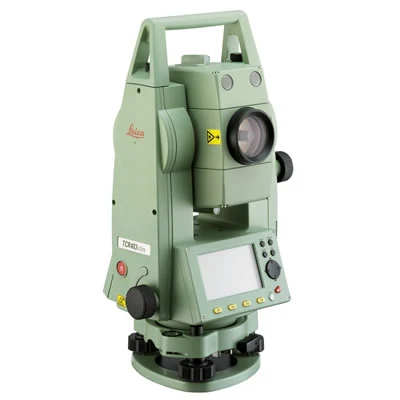
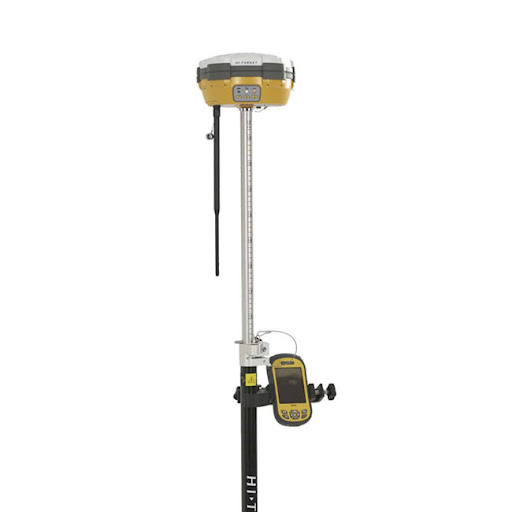
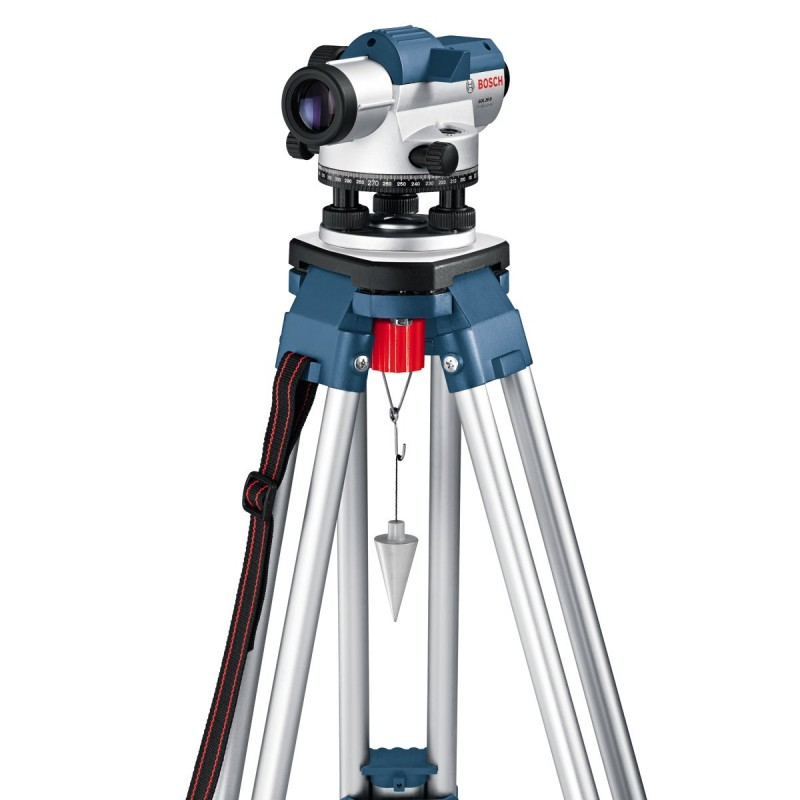
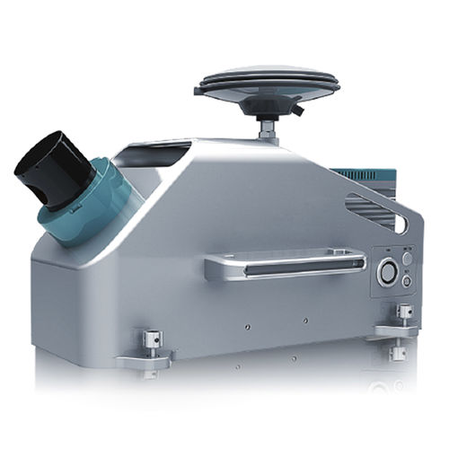
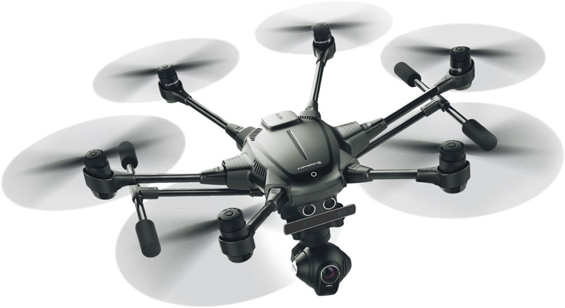

Totalna stanica, mjerna stanica ili tahimetar je računalna inačica elektroničkog teodolita.

Globalni položajni sustav (akronim GPS) je satelitski radionavigacijski sustav za određivanje položaja na Zemlji ili u njezinoj blizini.

Nivelir je osnovni mjerni instrument za mjerenje visinskih razlika kod geodetskih mjerenja.

Lidar je optički mjerni instrument koji odašilje laserske zrake koje se odbijaju od vrlo sitnih čestica raspršenih u Zemljinoj atmosferi i potom registriraju u optičkom prijamniku.

Dronovi se koriste za izmjere velikih površina kao što su polja, rijeke, jezera, ceste pa čak i velikih kompleksa stambenih ili industrijskih zgrada.